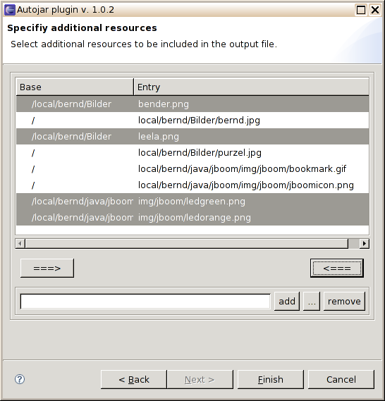

|
Datei-Direktangabe
Auch hier lassen sich Dateien festlegen, die in das Ausgabearchiv übernommen
werden sollen. Im Gegensatz zur vorigen Seite werden sie jedoch
nicht gesucht, sondern direkt angegeben. Ein Dateipfad kann entweder direkt im
unteren Textfeld eingegeben und mit "add" der darüber stehenden Liste
hinzugefügt werden, oder man startet durch Klicken auf "..." einen Datei-Auswahldialog.
In der Liste markierte Pfade werden bei einem Klick auf
"remove" aus der Liste entfernt.
In vielen Fällen ist es nicht sinnvoll, eine Datei im Archiv mit ihrem
vollen Pfadnamen einzutragen, insbesondere wenn es sich
um Ressourcen handelt, die später über den Classpath gesucht werden
( Beispiel: Wird im oben gezeigten Fall 4 Mal <--- gedrückt, sieht das Ergebnis anschließend so aus:  Hier angegebene Archive (.jar oder .zip) werden nicht als einzelne Datei, sondern in Form der darin enthaltenen Dateien in die Ausgabe kopiert, d.h. zunächst enpackt. Dies ist die letzte Wizard-Seite, daher ist der "Next"-Button deaktiviert. Wenn alle notwendigen Eingaben gemacht sind, startet "Finish" die Erzeugung des Archivs. Das Protokoll erscheint in der Konsole. |
Automatisches Erzeugen von Java-Archiven |
| Bernd Eggink, monoped@users.sourceforge.net | Projektseite:
|


|
|
 Dateisuche
Dateisuche